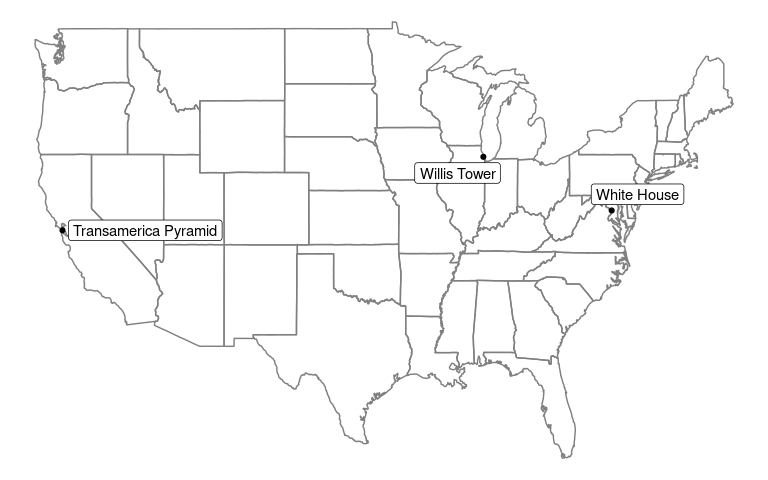

Tidygeocoder makes getting data from geocoding services easy. A unified high-level interface is provided for a selection of supported geocoding services and results are returned in tibble (dataframe) format.
Features:
- Forward geocoding (addresses ⮕ coordinates)
- Reverse geocoding (coordinates ⮕ addresses)
- Batch geocoding (geocoding multiple addresses or coordinates in a single query) is automatically used if applicable.
- Duplicate, NA, and blank input data is handled elegantly; only unique inputs are submitted in queries, but the rows in the original data are preserved by default.
- The maximum rate of querying is automatically set according to the usage policies of the selected geocoding service.
In addition to the usage examples below, see the Getting Started Vignette and blog posts on tidygeocoder.
Installation
To install the stable version from CRAN (the official R package servers):
install.packages('tidygeocoder')Alternatively, you can install the latest development version from GitHub:
devtools::install_github("jessecambon/tidygeocoder")Usage
In this first example we will geocode a few addresses using the geocode() function and plot them on a map with ggplot.
library(dplyr, warn.conflicts = FALSE)
library(tibble)
library(tidygeocoder)
# create a dataframe with addresses
some_addresses <- tribble(
~name, ~addr,
"White House", "1600 Pennsylvania Ave NW, Washington, DC",
"Transamerica Pyramid", "600 Montgomery St, San Francisco, CA 94111",
"Willis Tower", "233 S Wacker Dr, Chicago, IL 60606"
)
# geocode the addresses
lat_longs <- some_addresses %>%
geocode(addr, method = 'osm', lat = latitude , long = longitude)
#> Passing 3 addresses to the Nominatim single address geocoder
#> Query completed in: 3 secondsThe geocode() function geocodes addresses contained in a dataframe. The Nominatim (“osm”) geocoding service is used here, but other services can be specified with the method argument. Only latitude and longitude are returned from the geocoding service in this example, but full_results = TRUE can be used to return all of the data from the geocoding service. See the geo() function documentation for details.
| name | addr | latitude | longitude |
|---|---|---|---|
| White House | 1600 Pennsylvania Ave NW, Washington, DC | 38.89770 | -77.03655 |
| Transamerica Pyramid | 600 Montgomery St, San Francisco, CA 94111 | 37.79520 | -122.40279 |
| Willis Tower | 233 S Wacker Dr, Chicago, IL 60606 | 41.87887 | -87.63591 |
Now that we have the longitude and latitude coordinates, we can use ggplot to plot our addresses on a map.
library(ggplot2)
library(maps)
library(ggrepel)
ggplot(lat_longs, aes(longitude, latitude), color = "grey99") +
borders("state") + geom_point() +
geom_label_repel(aes(label = name)) +
theme_void()
To perform reverse geocoding (obtaining addresses from geographic coordinates), we can use the reverse_geocode() function. The arguments are similar to the geocode() function, but now we specify the input data columns with the lat and long arguments. The dataset used here is from the geocoder query above. The single line address is returned in a column named by the address argument and all columns from the geocoding service are returned because full_results = TRUE. See the reverse_geo() function documentation for more details.
reverse <- lat_longs %>%
reverse_geocode(lat = latitude, long = longitude, method = 'osm',
address = address_found, full_results = TRUE) %>%
select(-addr, -licence)
#> Passing 3 coordinates to the Nominatim single coordinate geocoder
#> Query completed in: 3 seconds| name | latitude | longitude | address_found | place_id | osm_type | osm_id | osm_lat | osm_lon | office | house_number | road | city | state | postcode | country | country_code | boundingbox | tourism | neighbourhood | county | building | suburb |
|---|---|---|---|---|---|---|---|---|---|---|---|---|---|---|---|---|---|---|---|---|---|---|
| White House | 38.89770 | -77.03655 | White House, 1600, Pennsylvania Avenue Northwest, Washington, District of Columbia, 20500, United States | 147370996 | way | 238241022 | 38.897699700000004 | -77.03655315 | White House | 1600 | Pennsylvania Avenue Northwest | Washington | District of Columbia | 20500 | United States | us | 38.8974908 , 38.897911 , -77.0368537, -77.0362519 | NA | NA | NA | NA | NA |
| Transamerica Pyramid | 37.79520 | -122.40279 | Transamerica Pyramid, 600, Montgomery Street, Chinatown, San Francisco, San Francisco City and County, San Francisco, California, 94111, United States | 95364489 | way | 24222973 | 37.795200550000004 | -122.40279267840137 | NA | 600 | Montgomery Street | San Francisco | California | 94111 | United States | us | 37.7948854 , 37.7954472 , -122.4031399, -122.4024317 | Transamerica Pyramid | Chinatown | San Francisco | NA | NA |
| Willis Tower | 41.87887 | -87.63591 | Willis Tower, 233, South Wacker Drive, Printer’s Row, Loop, Chicago, Cook County, Illinois, 60606, United States | 103673983 | way | 58528804 | 41.878871700000005 | -87.63590893936448 | NA | 233 | South Wacker Drive | Chicago | Illinois | 60606 | United States | us | 41.8785389 , 41.8791932 , -87.6363362, -87.6354746 | NA | Printer’s Row | Cook County | Willis Tower | Loop |
In the Wild
For inspiration, here are a few articles (with code) that leverage tidygeocoder:
- Exercises: Spatial Data Wrangling with sf - part of a statistical computing course at Duke.
- Geocoding the Minard Map - recreating a famous infographic with geocoding.
- Mapping a network of women in demography - using rvest and tidygeocoder to map Google Scholar data.
- Road Routing in R - demonstration of three different routing APIs.
- Mapping Texas Ports With R - mapping the Texas coast with rnaturalearth and sf.
Contributing
Contributions to the tidygeocoder package are welcome. File an issue for bug fixes or suggested features. If you would like to contribute code such as adding support for a new geocoding service, reference the developer notes for instructions and documentation.
Citing tidygeocoder
Use the citation() function:
citation('tidygeocoder')To cite tidygeocoder use: Cambon J, Hernangómez D, Belanger C, Possenriede D, (2021). tidygeocoder: An R package for geocoding. Journal of Open Source Software, 6(65), 3544, https://doi.org/10.21105/joss.03544 (R package version 1.0.3) A BibTeX entry for LaTeX users is @Article{, title = {tidygeocoder: An R package for geocoding}, author = {Jesse Cambon and Diego Hernangómez and Christopher Belanger and Daniel Possenriede}, doi = {10.21105/joss.03544}, url = {https://doi.org/10.21105/joss.03544}, year = {2021}, publisher = {The Open Journal}, volume = {6}, number = {65}, pages = {3544}, journal = {Journal of Open Source Software}, note = {R package version 1.0.3}, }
Or refer to the citation page.